Analyse statt Zufall · seit 2004
Den richtigen Schuh
findest du bei uns im Laden.
Videolaufanalyse, Fußanalyse und Geländetest — direkt in Oberaudorf. Persönlich, ehrlich, ohne Verkaufsdruck.
Unsere Methode
Vier Schritte zum richtigen Schuh
Kein Zufall, kein Ratespiel. Ein klarer Ablauf, den wir seit über 20 Jahren verfeinern.
-
Foto Schritt 01 Fußanalyse mit Spiegeltisch — Hände am Fuß, Detailaufnahme
Fußanalyse
Mit Spiegeltisch und geschultem Blick erfassen wir jede Eigenheit deines Fußes.
-
Foto Schritt 02 Videolaufband-Analyse — Kunde am Laufband, Hans schaut auf Monitor
Videolaufband-Analyse
Mit hochauflösender Kamera und Zeitlupe sehen wir, warum deine Schuhe nicht zu deinem Laufstil passen — und was wirklich hilft. Kein Marketing. Unser Handwerk seit 20 Jahren.
-
Foto Schritt 03 Geländetest vor dem Laden — Kunde testet Schuh draußen, Bergkulisse
Geländetest
Kein Schuh verlässt uns ungetestet — du probierst ihn direkt vor der Tür.
-
Foto Schritt 04 Beratungsgespräch im Laden — Hans und Kunde im Dialog, Schuhregal
Persönliche Beratung
Eine gute Beratung braucht Zeit. Die nehmen wir uns — ohne Verkaufsdruck.
Sortiment
Was du bei uns findest.
Ausgewählte Marken und Modelle für Straße, Trail und Berg. Keine Masse — sondern das, was wirklich funktioniert.
Straßenlauf, Tempotraining, Alltag — für jeden Laufstil der passende Schuh.
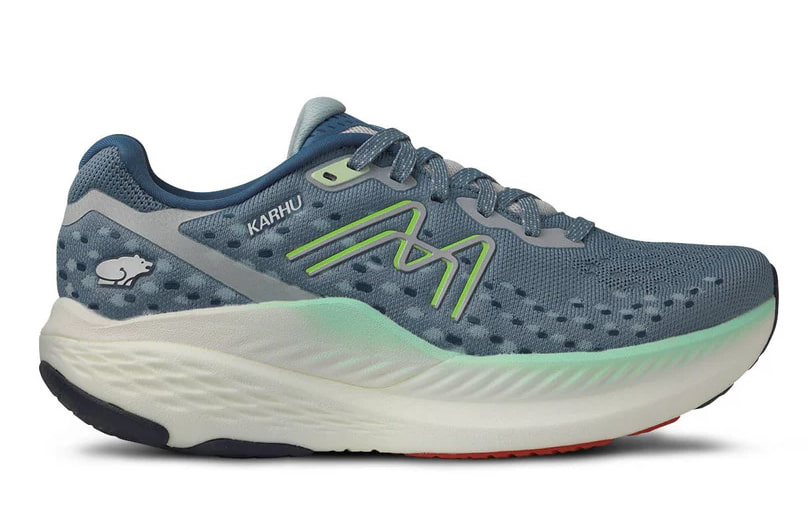
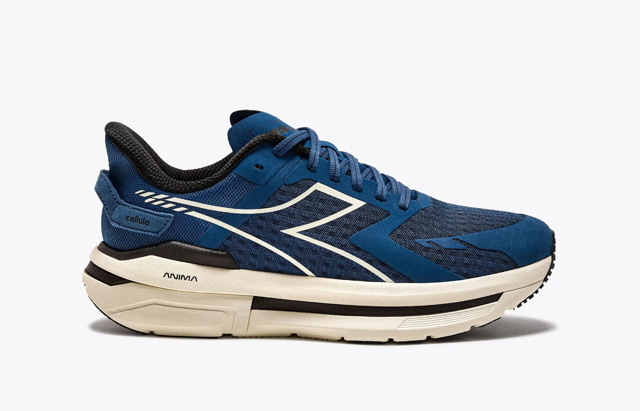
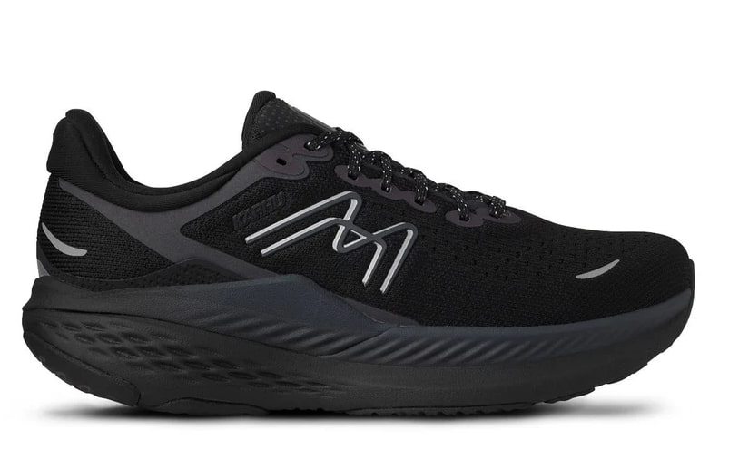
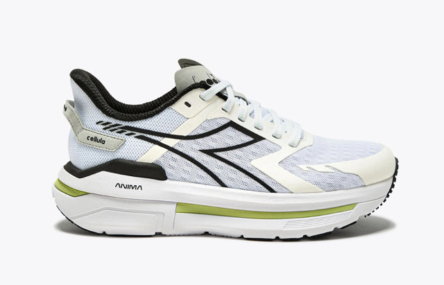
Marken im Sortiment
- Asics
- New Balance
- Saucony
- Hoka
- Brooks
- Karhu
- Diadora
- Mizuno
Vom Trailrunner für schnelle Tagestouren bis zum steigeisenfesten Bergstiefel — klassische Bergstiefel zeigen wir dir gern persönlich im Laden.
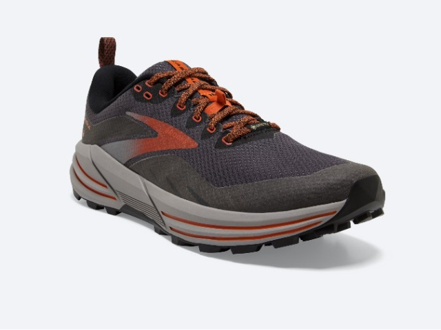
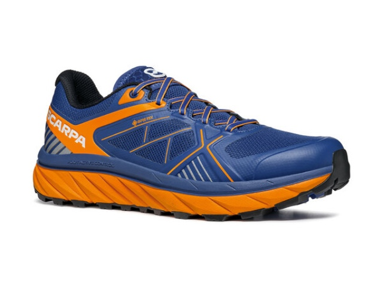
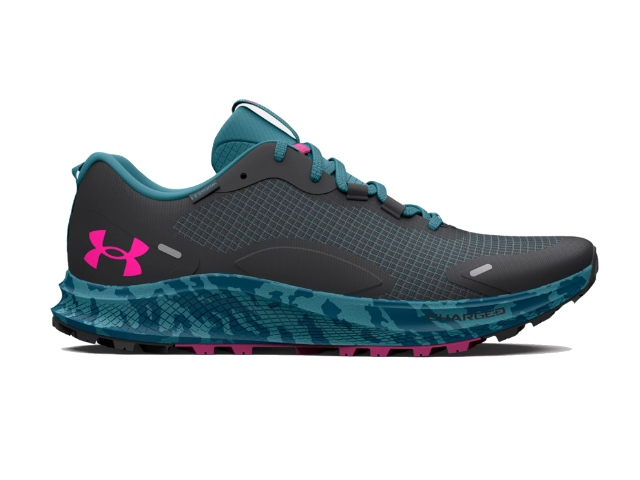
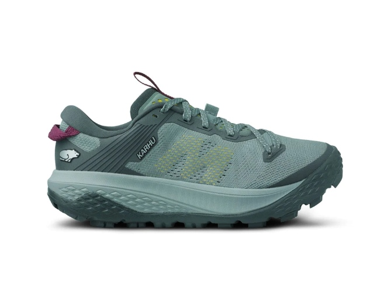
Marken im Sortiment
- Lowa
- Meindl
- Scarpa
- Hanwag
- Brooks
- Saucony
Merino-Funktionswäsche aus Europa und Sport-BHs — freitags und samstags mit Susi in der Textil-Sprechstunde.
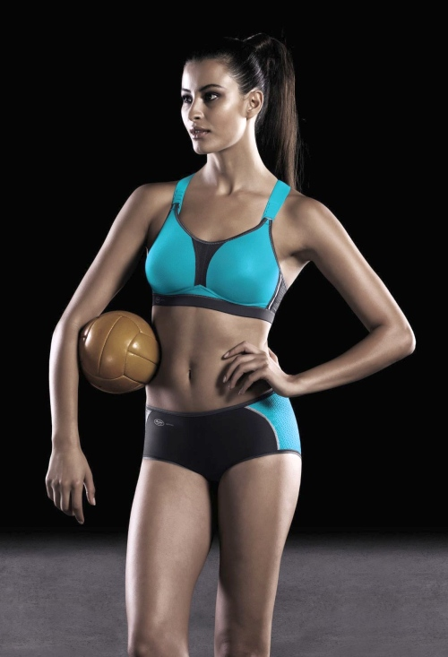
Marken im Sortiment
- Aclima
- Devold
- Icebreaker
- Falke
- Anita Active
- CEP
Alles, was du fürs Training und die Tour brauchst — ausgewählt, nicht aneinandergereiht.
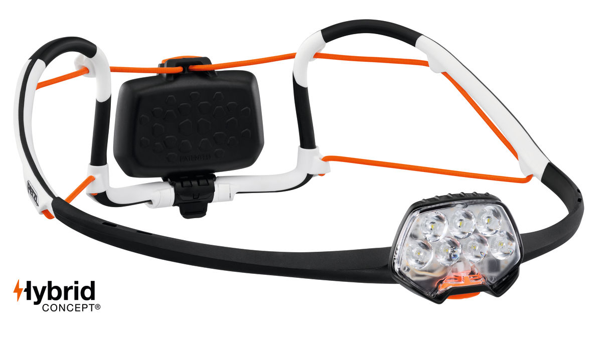
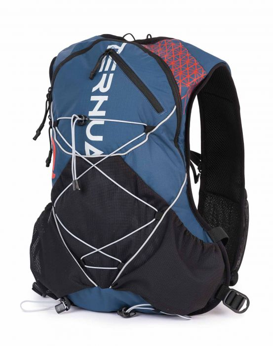
Auch dabei
- Laufsocken
- Trekkingstöcke
- Grödel & Spikes
- Stirnlampen
Über uns
Drei Menschen, ein Handwerk.
Hans Resch und Hans Schmid haben SCHUHWIEDU am 1. Juli 2004 gegründet — mit einem klaren Ziel: echte Beratung statt schnellem Verkauf. Sportler, die Sportler beraten.
Manche Kunden fahren über 100 Kilometer zu uns. Nicht wegen der Auswahl, sondern wegen der Zeit, die wir uns nehmen.
-
Hans Resch Gründer · Bergsteiger, Bergläufer, Skitouren-Gänger — Beratung aus eigener Erfahrung.
-
Hans Schmid Gründer · Laufanalyse und Trainingsberatung, Jahrzehnte aktiv in den Alpen.
-
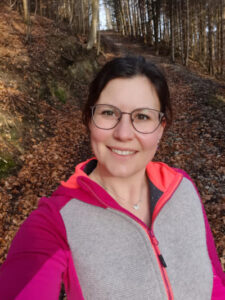
Susi Funktionsbekleidung & Sport-BH — nur in der Textil-Sprechstunde.
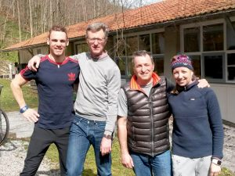
Prominente Gäste
Profis wissen, wo echte Sportler einkaufen.
Biathletin Franziska Preuß und Biathlet Simon Schempp haben dem Schuhwiedu schon einen Besuch abgestattet. Solche Begegnungen sind für uns Anerkennung — und Bestätigung dafür, dass ehrliche Beratung auch im Profisport gefragt ist.
Kundenstimmen
Was unsere Kunden sagen.
Echte Bewertungen — fünf von fünf Sternen auf Google.
★★★★★Außergewöhnlich gute Beratung! Der Fuß wird mit viel Expertise analysiert und der passende Schuh gefunden. 100 km Anfahrt — jeden Kilometer wert.
★★★★★„Hervorragender Service, Freundlichkeit und absolut kompetente Beratung. Durfte mir Zeit lassen und wurde nie gedrängt. Der Schuh passt perfekt!"
Markus R.
★★★★★„Noch nie habe ich eine derart professionelle Beratung erhalten. Mit viel Geduld hat man mir geholfen, den richtigen Schuh für meinen Fuß zu finden."
Sabine K.
★★★★★„Ein kleines Juwel in Oberaudorf — für das mir kein Weg zu weit ist. Klare Empfehlung an alle, die wirklich den richtigen Schuh suchen."
Julia M.
Häufige Fragen
Was du wissen willst, bevor du kommst.
Ein paar Antworten auf das, was uns am häufigsten gefragt wird. Alles andere gern persönlich — ruf uns an.
Muss ich einen Termin vereinbaren?
Für die Videolaufanalyse empfehlen wir einen kurzen Anruf vorab — so können wir uns wirklich Zeit für dich nehmen. Zum Stöbern und für Beratung zu Bergschuhen, Bekleidung oder Zubehör kannst du während der Öffnungszeiten jederzeit vorbeikommen.
Was kostet die Videolaufanalyse?
Die Videolaufanalyse ist in jeder Schuhberatung bei uns enthalten — ohne Aufpreis. Als separater Service auf Anfrage.
Wie lange dauert eine Beratung?
Je nach Anliegen zwischen 30 und 60 Minuten. Eine gründliche Laufanalyse mit Videoauswertung und mehreren Schuhtests braucht Zeit — und die nehmen wir uns.
Gibt es Parkplätze?
Direkt in der Laurentiusstraße sowie am nahen Marktplatz Oberaudorf stehen mehrere Parkplätze zur Verfügung.
Ist der Laden barrierefrei?
Ruf uns gern kurz an, bevor du kommst — dann sagen wir dir genau, was dich erwartet und wie wir dir den Zugang am besten ermöglichen.
Kann ich auch als Anfänger zu euch kommen?
Natürlich. Gerade am Anfang lohnt sich eine gute Beratung — der richtige Schuh entscheidet oft, ob du beim Sport bleibst oder frustriert aufhörst. Wir sprechen Klartext, kein Fachchinesisch.
Besuch uns
Laurentiusstraße 24
83080 Oberaudorf
Öffnungszeiten
- Mo, Di, Do, Fr
- 09:00 – 12:30 · 14:30 – 18:00
- Mittwoch
- 09:00 – 12:30
- Samstag
- 09:00 – 13:00
- Sonntag
- Geschlossen